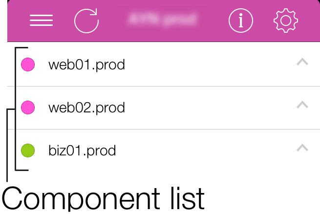
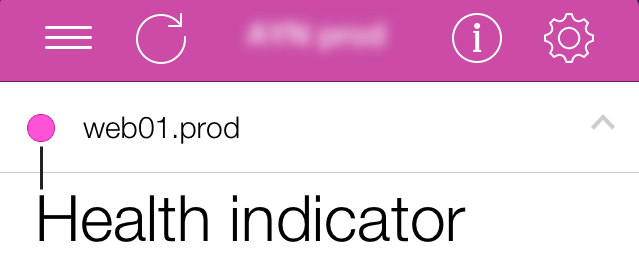

The central point of MoSKito-Control App is the main panel. All the monitored components are listed here.
Navigate through component list: swipe up/down.
Every component has a health indicator. It is a sign that changes color in accordance with the state of component.
Colors of the health indicators stand for the following statuses:
= Good
= Minor problem
= Yet minor problem that needs your attention
= Problem that needs inspection
= Imminent system malfunction
= No Data Error
No Data Error means no data is currently available for the component. It might be caused by different reasons: from an unstable Internet connection up to a severe application breakdown. In any case, the situation may require your attention.
The top panel takes the color of the worst component. For example, when all components are green and only one is purple, the panel becomes purple, too.
In case MoSKito-Control App cannot receive data, the panels will turn blue and a message will appear to explain what goes wrong.